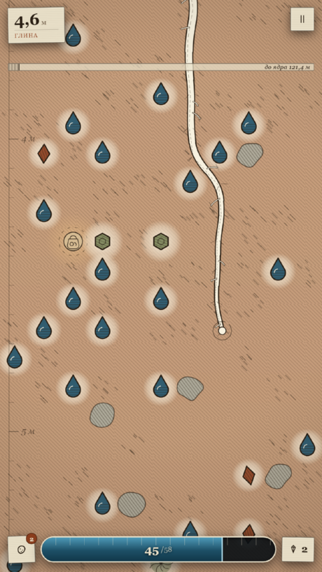
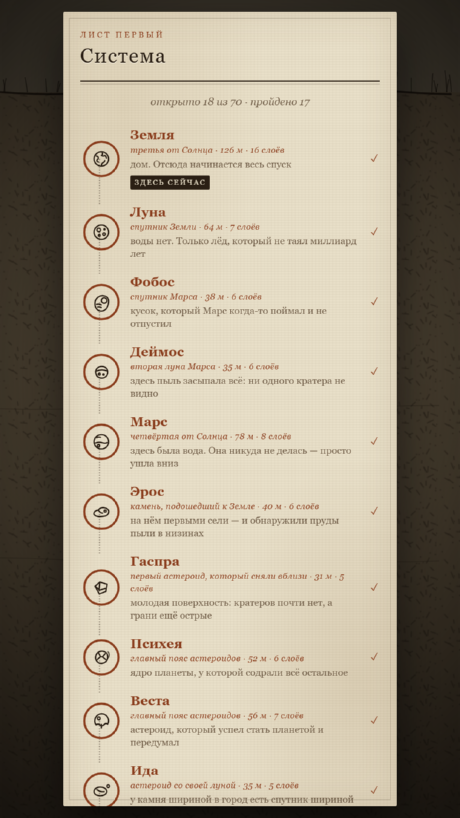
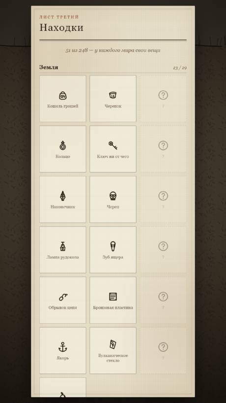

Игра · Android
Roots
Ведите корень к ядру планеты, ищите воду и собирайте редкие растения.
В Roots вы ведёте корень от поверхности к ядру планеты. Тяните его пальцем сквозь почву, обходите камни и ищите воду. Каждый шаг расходует запас, поэтому даже короткий крюк за кристаллом может изменить ход спуска.
Пускайте боковые корни, чтобы добраться до воды и подземных находок. Между спусками улучшайте корень и открывайте новые миры со своими препятствиями. Когда вы доберётесь до ядра, на поверхности вырастет растение и пополнит ваш гербарий.




Что внутри
70 миров
Земля, Луна, Марс, спутники Юпитера и Сатурна и другие. В каждом свои слои и свои находки.
248 находок
Лежат в породе по пути вниз и собираются в журнал.
Гербарий
Когда мир пройден, на его поверхности вырастает растение и попадает в гербарий.
Улучшения
Улучшения для корня: больше запас воды, запасные клубни и другое.
Мир дня
Один мир на сутки, одинаковый для всех игроков.
5 языков
Русский, английский, испанский, немецкий, португальский.
Данные и интернет
Работает без интернета, регистрация не нужна. Прогресс хранится на устройстве. В сеть уходят только запросы рекламной сети.
Подробнее — в политике конфиденциальности.